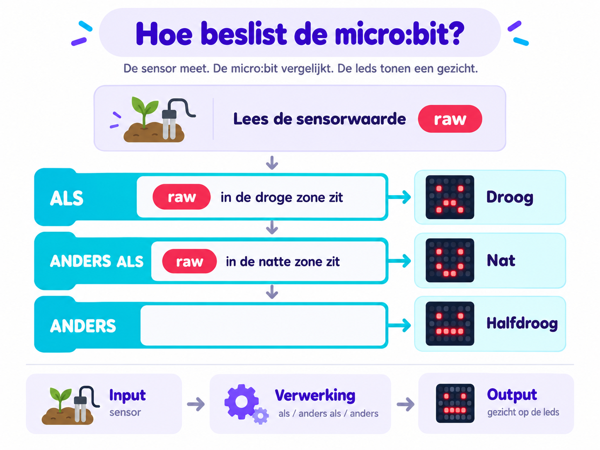

Onze uitdaging
Kan jij een micro:bit maken die ziet of een plant water nodig heeft?
O · Oriënteren
Een plant kan niet zeggen wanneer ze water nodig heeft. Wij bouwen daarom een plantenmeter met een bodemvochtsensor en een micro:bit.
De sensor geeft een getal. De micro:bit bekijkt dat getal en toont daarna een gezicht: blij als er genoeg water is, verdrietig als de aarde droog is.
Kan jij een micro:bit maken die ziet of een plant water nodig heeft?
Denk je dat de sensor hetzelfde getal geeft in droge en natte aarde?
Je hoeft nog niet te weten welk getal “droog” of “nat” betekent. Dat gaan we zelf meten. Zo doen wetenschappers dat ook: eerst voorspellen, daarna meten en dan pas besluiten.
V · Voorbereiden
Kies het onderdeel dat informatie naar de micro:bit stuurt.
Kies één antwoord.
U · Uitvoeren
We lezen nu de getallen van de bodemvochtsensor.
De light-versie verwacht seriële regels in de vorm
tijd_ms,raw op 115200 baud.
Laatste regel: --
Plaats de sensor telkens ongeveer even diep. Bewaar drie metingen.
Gemiddelde van droge aarde: --
Maak de aarde duidelijk nat en bewaar opnieuw drie metingen.
Gemiddelde van natte aarde: --
De computer verdeelt het gebied tussen jouw droge en natte meting in drie stukken.
Nu testen we of een nieuwe meting in de middelste zone terechtkomt.
Gemiddelde van vochtige aarde: --
Nog niet getest.
Nu gebruiken we input, verwerking en output samen.

JavaScript-weergave in MakeCode:
Meet eerst droge en natte aarde.
Controleer of de micro:bit hetzelfde beslist als jouw waterzones.
| Test | Sensorgetal | Verwacht gezicht | Gezicht op micro:bit | Resultaat |
|---|---|---|---|---|
| Droge aarde | -- | Verdrietig | -- | |
| Vochtige aarde | -- | Neutraal (-_-) | -- | |
| Natte aarde | -- | Blij | -- |
R · Reflecteren